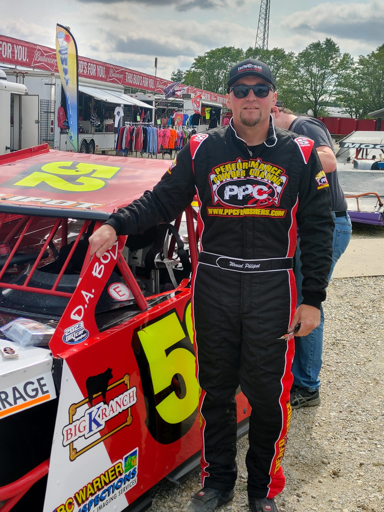

#52 • UMP Modified
Weasel Phlipot is a veteran driver and fan favorite in the UMP Modified division. With decades of experience on dirt tracks across the Midwest, Weasel brings skill, determination, and plenty of excitement every time he hits the track.
From early Chevelle late models to today's competitive modifieds, the Phlipot name has been synonymous with hard racing and great sportsmanship.
The Phlipot Racing team has a long and storied history in dirt track racing. From the early days running Chevelles to the current UMP Modified #52, the team continues the tradition of competitive racing and community involvement.
Whether it's a local track or a big event like Eldora or Lima, you can always expect Weasel and the team to be giving it their all.